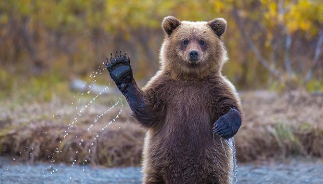
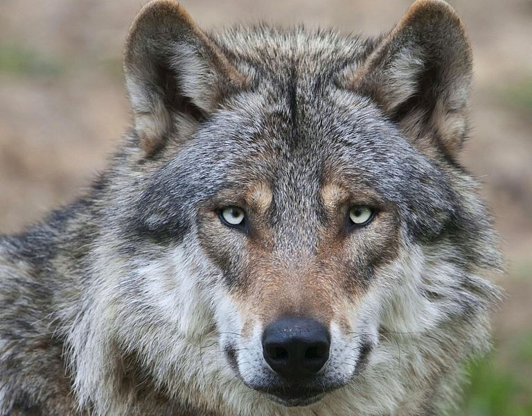

 Хижі ссавці — це тварини, які полюють на інших для харчування. Вони мають спеціалізовані органи, які допомагають їм ефективно ловити та вбивати здобич, наприклад, гострі зуби та пазурі. Їхній раціон зазвичай складається з м'яса, але деякі з них можуть доповнювати його рослинною їжею. До найвідоміших хижих ссавців належать леви, тигри, вовки, ведмеді та гепарди, які мають високу швидкість, силу або хитрість, щоб успішно полювати.
 Ці тварини грають важливу роль в екосистемах, регулюючи чисельність травоїдних та підтримуючи баланс природи. Багато хижаків діють як вершина харчового ланцюга, контролюючи популяції інших видів і запобігаючи їх надмірному розмноженню. Однак, їх виживання часто залежить від доступності їжі та території для полювання, що робить їх особливо вразливими до змін у середовищі існування.
Деякі види хижих ссавців перебувають під загрозою зникнення через людську діяльність, як-от браконьєрство та руйнування природних середовищ. Наприклад, популяції амурських тигрів та сніжних барсів значно скоротилися через знищення їхнього ареалу. Сучасні заходи охорони дикої природи спрямовані на збереження цих видів, створюючи заповідники та забороняючи незаконне полювання.
Вгору